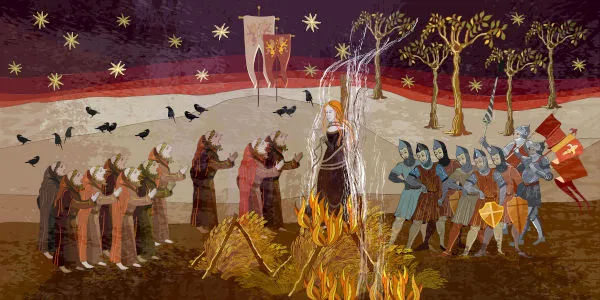

<!DOCTYPE html>

<html lang="pt-br">
</html>

<head>
	<meta charset="UTF-8">
    <title>trabalho interdisciplinar</title>
  
    <style> 
p {
	text-align:justify; 
	text-indent: 50px;
}

h1 {
	font-family: Arial;
	font-size: 30pt;
	color: blue;
	text-shadow: 2pt 2pt 2pt black;
}
    </style>
 </head>

 <body bgcolor="pink" > 
<div id=interface>

<header id="cabeçalho">


<hgroup>
	<h1 style= "text-align:center; font-family: Arial;
	font-size: 30pt;
	color: blue;
	text-shadow: 2pt 2pt 2pt black;">Idade Média</h1>

	<h3 align="right">Isane Maria Wowcsuk Marques</h3>

	<h2>Principais acontecimentos</h2>
	<p>A Idade Média foi muito longa e, logicamente, impactada por diferentes acontecimentos importantes para a história humana. A Idade Média, em si, é fruto do fim do Império Romano do Ocidente, após o qual uma série de reinos germânicos estabeleceu-se na Europa Ocidental.</p>

	<p>O caso mais simbólico foi o dos francos, povo germânico que se estabeleceu na Gália e formou um reino governado, primeiro, pelos merovíngios e, depois, pelos carolíngios. Estes foram a primeira grande dinastia a governar um reino na Europa, e, por meio de Carlos Magno, seu principal rei, formaram um império com um território bastante vasto.</p>

	<p>O surgimento do islamismo no século VII marcou um rompimento do Ocidente com o Oriente, sobretudo quando os muçulmanos conquistaram a Península Ibérica. O avanço muçulmano na Europa só foi interrompido por Carlos Martel, em 732. Séculos depois, a Igreja Católica encontrou na guerra contra os muçulmanos uma forma de estender sua riqueza até o Oriente. </p>

<center>  </center><br>
<p>As Cruzadas ocorreram do século XI ao século XII e mobilizaram tropas cristãs contra os muçulmanos, na Palestina e no norte da África. Ao todo foram nove cruzadas, sendo a primeira delas convocada pelo <strong>Papa Urbano II</strong>, em 1095. A nona Cruzada foi encerrada em 1272, e o objetivo inicial dos cristãos (conquistar Jerusalém) não foi alcançado.</p>

<p>Outros destaques que podem ser feitos sobre a Idade Média são o Império Bizantino e o estabelecimento da Inquisição. Assuntos também relevantes são a cultura e a ciência medievais, geralmente pouco estudadas.</p>

</header>

 </div>	 
</body> 